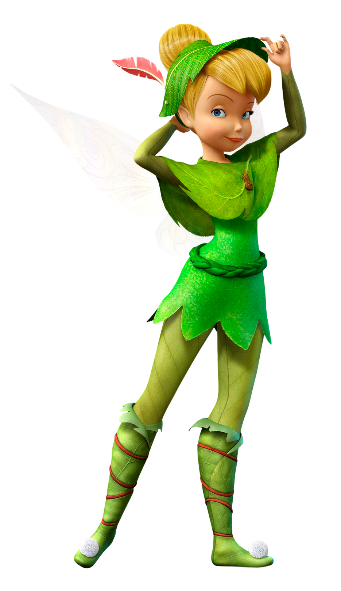

Ireland is a beautiful green country located in northwest Europe. It is an island that is separated from Great Britain by the Irish Sea. The island is considered the 20th largest island in the world, and encompasses 84,421 kilometers squared of land. It is home to 6.4 million people, and the capital city of Dublin has a population of 1.273 million people. The island has a hilly geography with numerous plains and rivers cutting through the land. Its currency is the Euro. The country’s official language is both English and Irish. Most people speak a dialect of English, however many families who have lived in Ireland for generations understand and speak Irish. Ireland does not have an official religion, but the primary religion that is followed in the country is Christianity. Its flag is a horizontal flag with green, white, and orange vertical stripes.


Most Irish people believe that fairies exist. In their culture, fairies have magical powers and bring happiness and great things to families.